RUNTIMEIdle · 休眠
public/avatar/8bit/states/idle.pngReference 是视觉与角色验收基准；Runtime 是应用可直接加载的资产。运行时状态、复用关系与锚点以 manifest 为准。
四张透明 PNG 是关键姿势，不是完整逐帧动画。Speaking 与 Error 在首版中按 manifest 复用。
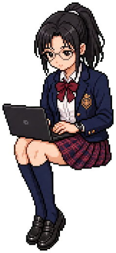
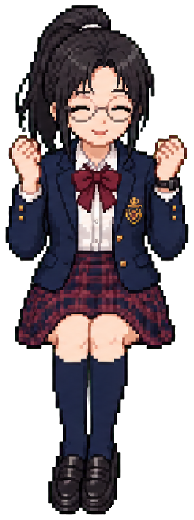
每张图负责一个界面层级或状态语言，不作为彼此独立的主题。
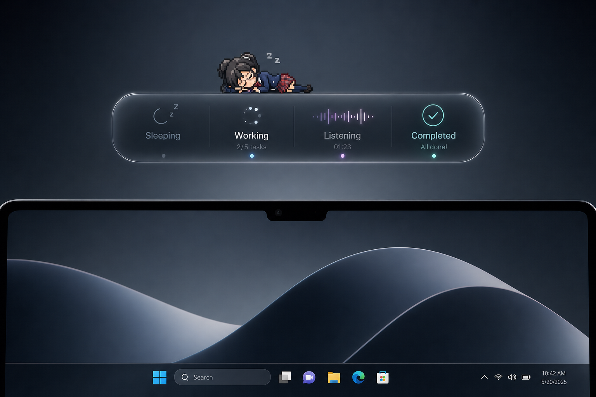
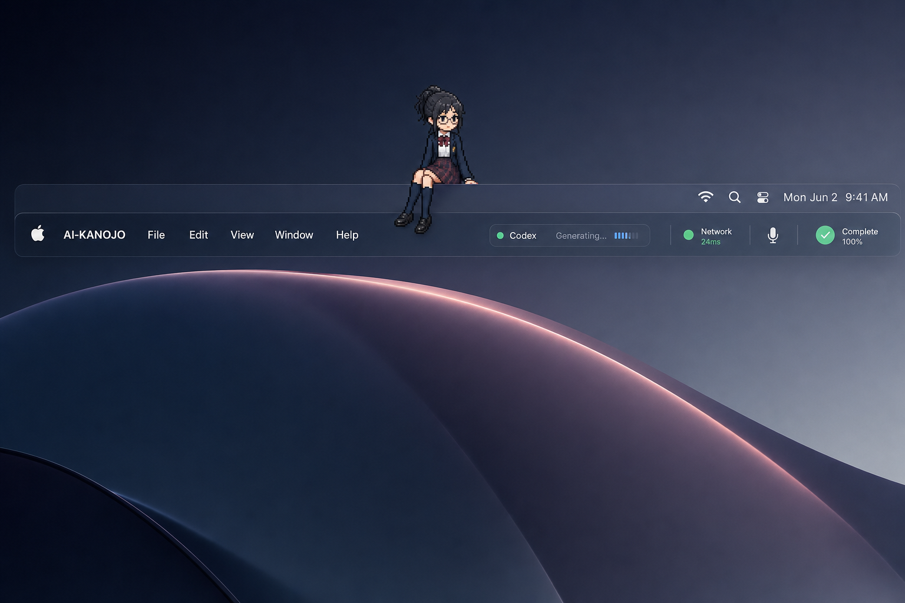
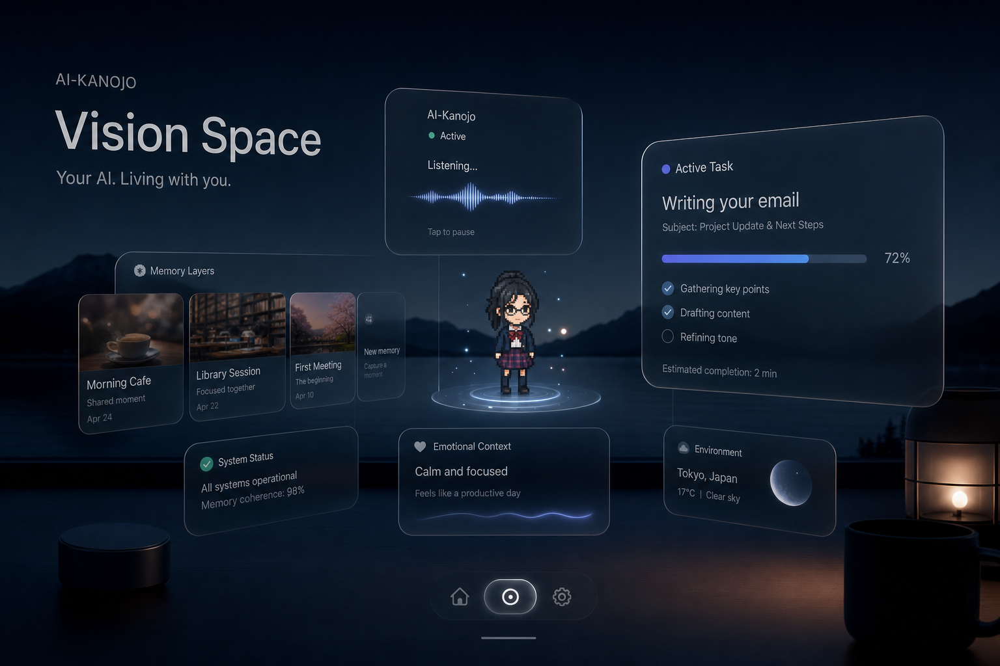
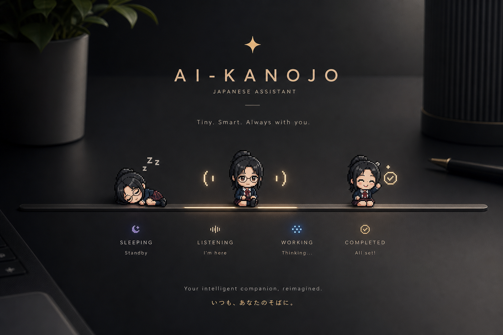
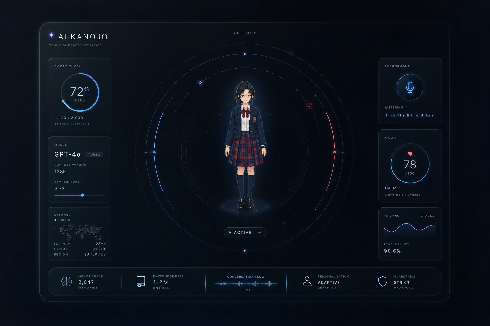
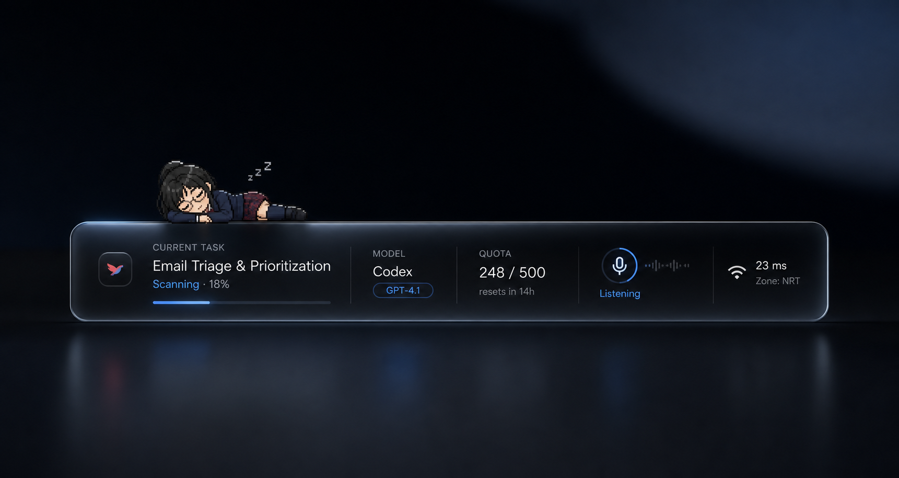
v005 是身份标准，旧三视图仅作遮挡与结构参考。六套大图目前是服装预览。
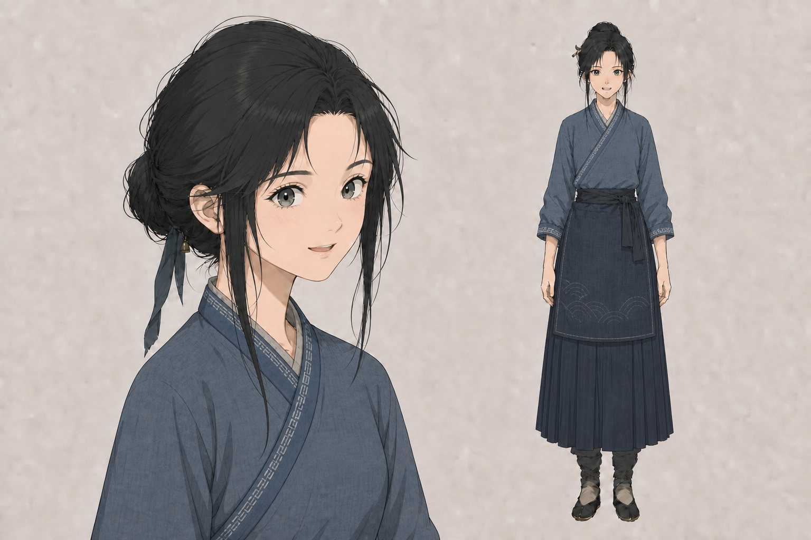
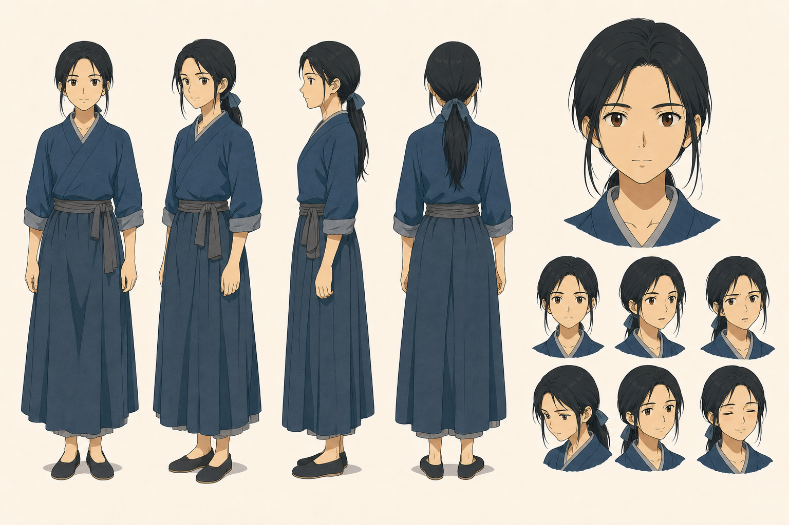
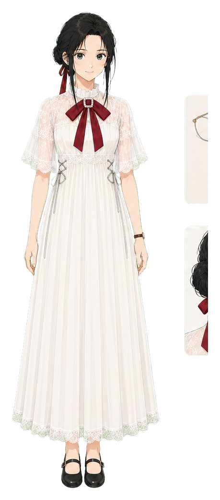
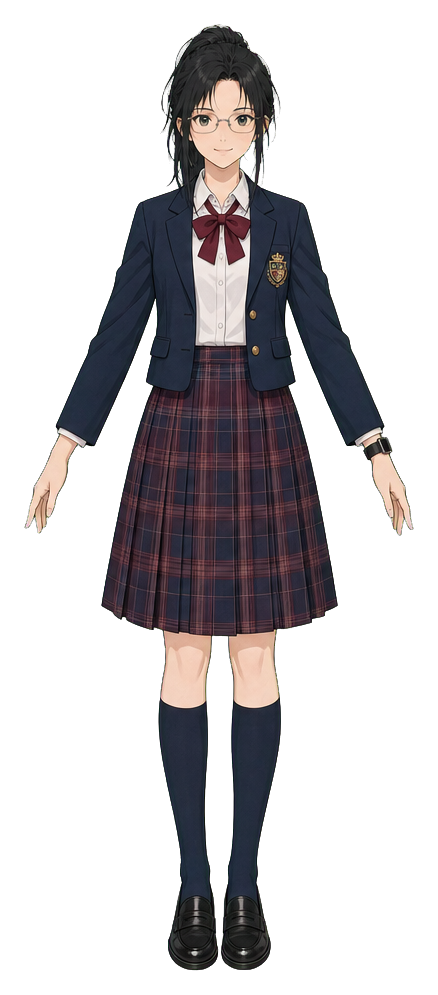
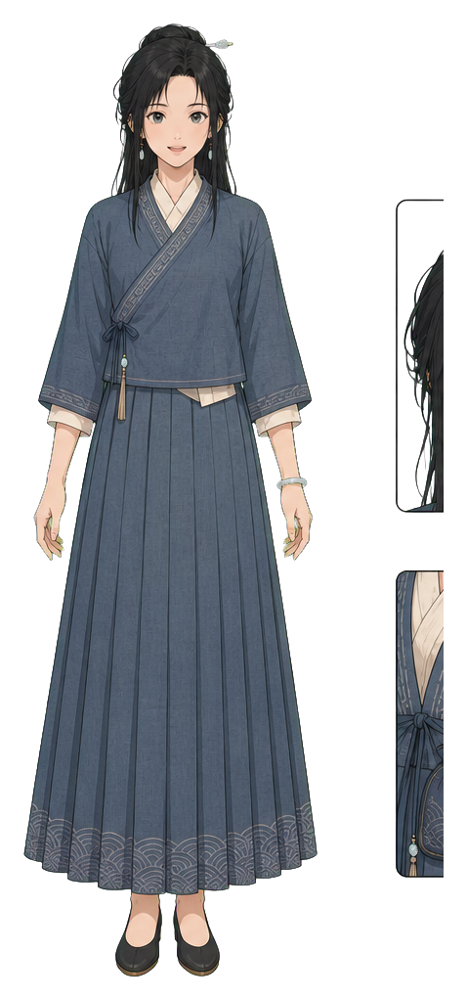
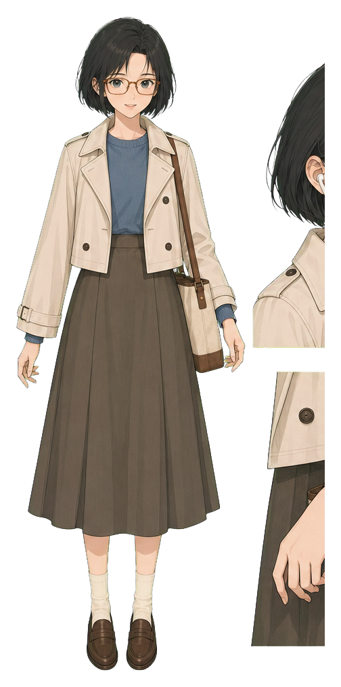
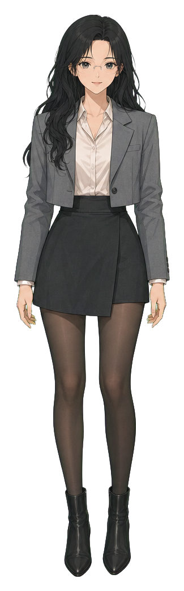
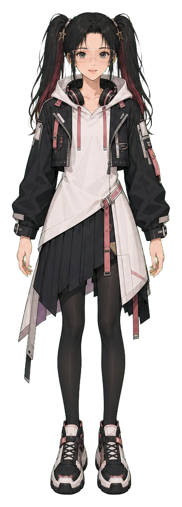